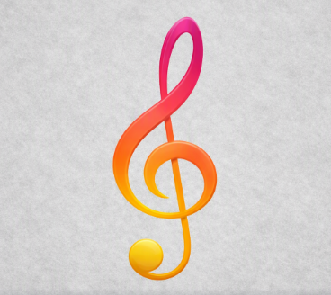

🎵 SOUND
Bass Orbs
Mastery 1
Generates 4 orbs that deal
66 damage
upon hitting an enemy.
Sonic Tremor
Mastery 50
Musical notes emerge from the ground, dealing
132 damage.
(Knockback)
Harmonic Sequence
Mastery 100
Dash forward and punch an enemy,
initiating a combo that deals
280 damage.
(Knockback)
Sound Speed
Mastery 25
Teleport a short distance forward.
Each teleport consumes
1 charge
(2 charges total).